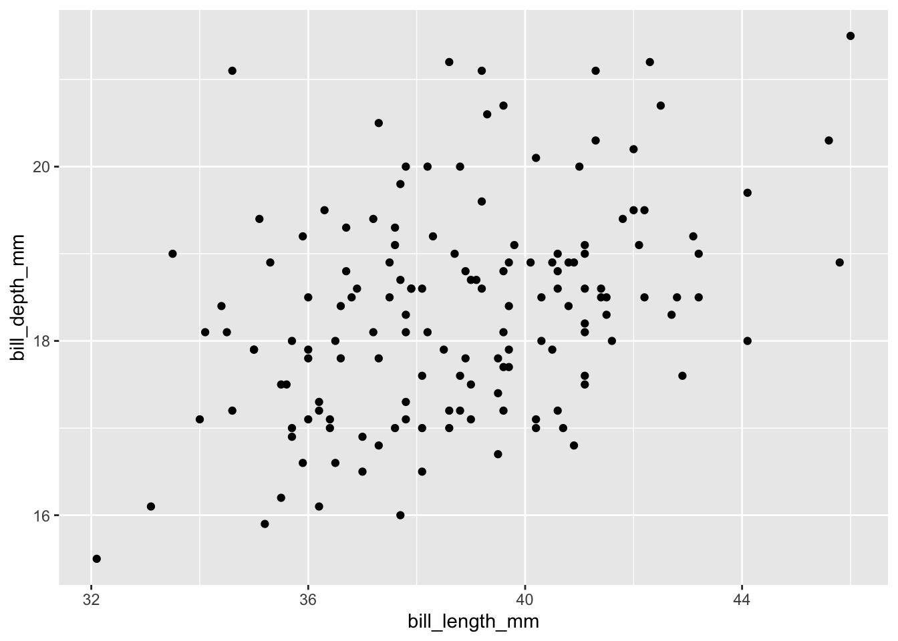

library(babynames)
library(janitor)
library(palmerpenguins)
library(readxl)
library(rstanarm)
library(tidyverse)Online Appendix J — Class activities
I have found various ways to use this book in classes. While traditional chalk-and-talk lectures work, if the students can commit to reading the chapter before the class, then I have found that using class for group-based projects and discussion is more enjoyable. Each week create small groups, each of two to four students (randomly create new groups every week to give students a chance to work with new people). Then generally following a “think-pair-share” exercise (Lyman 1981) have them work through most exercises, first by themselves, then compare with their group, and finally share selected answers with the class. I recommend creating a Google Doc and using that in places to make it easier to share. If you take this approach then the weekly quiz becomes especially important to ensure students are doing the readings.
In terms of timing and coverage, I have found that if Part I “Foundations” is covered, then the rest of the chapters are fairly independent. While I try to go with one chapter per week, students sometimes take a while to get started, and the first three chapters takes about three weeks (even though there is not much to the first chapter).
Typically, somewhere between the first and second papers is where it all starts to come together. It is important that Paper 1 is returned quickly to them so that they can incorporate lessons from that for future papers.
J.1 Telling stories with data
- Write three dot points about what you expect to get, and how you expect to change, by taking this course?
- Write a one-paragraph response to: “What is data science?”. Strong answers would include references and draw on your own experience.
- [The instructor should take a photo of the class, then display the photo.] Write three aspects about what the photo shows (faces, class composition, etc), and three aspects about what the photo does not (context, thoughts, emotions, motivations, students who are not present, etc). Discuss how this relates to data science.
- Please discuss one of the ten elements of telling convincing stories with data that you are particularly experienced with, and another that you are less experienced with.
- [The instructor should give each group a different item to use for measurement, some of which are more useful than others, for instance, measuring tape, paper, ruler, markers, scales, etc.] Using the item you were given, please answer the following question: “How long is your hair?”. Relate your experience to data science.
J.2 Drinking from a fire hose
- Use the starter folder and create a new repo. Add a link to the GitHub repo in the class’s shared Google Doc.
- Pick one of the
dplyrverbs –mutate(),select(),filter(),arrange(),summarize(). Explain what it does and the context, and then livecode an example of its use. - Explain what class is, with an example.
- Simulate 100 draws from the uniform distribution with mean 5 and standard deviation 2 in the
simulation.Rscript. Write one test for this dataset in thetests.Rscript. - Simulate 50 draws from the Poisson distribution with lambda 10 in the
simulation.Rscript. Write two tests for this dataset in thetests.Rscript. - Gather some data on Marriage Licence Statistics in Toronto using Open Data Toronto in the
gather.Rscript. Clean it in thecleaning.Rscript.1 Graph it in the Quarto document. - The following code produces an error. Please add it to a GitHub Gist, and email it to the instructor asking for help:
tibble(year = 1875:1972,
level = as.numeric(datasets::LakeHuron)) |>
ggplot(aes(x = year, y = level)) |>
geom_point()- The following code creates an odd-looking graph in terms of dates. Please identify the issue and fix it, by adding functions before
ggplot().
set.seed(853)
data <-
tibble(date = as.character(sample(seq(
as.Date("2022-01-01"),
as.Date("2022-12-31"),
by = "day"
),
10)), # https://stackoverflow.com/a/21502397
number = rcauchy(n = 10, location = 1) |> round(0))
data |>
# MAKE CHANGE HERE
ggplot(aes(x = date, y = number)) +
geom_col()- Consider the following code to make a graph. You want to move the legend to the bottom but cannot remember the
ggplot2function to do that. Please find the answer on Stack Overflow.
penguins |>
drop_na() |>
ggplot(aes(x = bill_length_mm, y = bill_depth_mm, color = species)) +
geom_point()J.3 Reproducible workflows
- Use the starter folder and create a new repo. Add a link to the GitHub repo in the class’s shared Google Doc.
- Use Quarto to make a PDF with a title, author, and an abstract.2
- Add three sections and some code that produces the mean bill length, by species, for
palmerpenguins::penguins(with the code itself hidden). - Add a citation of R and
palmerpenguins, then add a graph of body mass, by sex. - Add a paragraph of text about the graph and a cross-reference. Also add a table about the number of species, by year.
- [The instructor should (very slowly) live code all this and have students code-along.] Set up git on your local computer.3 Make a GitHub repo, then make a local copy, make some changes, and push.4
- Find the GitHub repo of a partner, fork it, make a change, and make a pull request.
- The following code produces an error. Please follow the strategies in Section 3.5.1 to fix it.
tibble(year = 1875:1972,
level = as.numeric(datasets::LakeHuron)) |>
ggplot(aes(x = year, y = level)) |>
geom_point()- The following code produces an error. Please follow the strategies in Section 3.5.1 to fix it.
tibble(year = 1871:1970,
annual_nile_flow = as.character(datasets::Nile)) |>
ggplot(aes(x = annual_nile_flow)) +
geom_histogram()- The following code produces an error. Following Section 3.5.2 create a reprex (change the example to use a more common dataset such as
mtcars), add it to a GitHub Gist, and email it to the instructor.
tibble(year = 1875:1972,
level = as.numeric(datasets::LakeHuron)) |>
ggplot(aes(x = year, y = level)) |>
geom_point()- The following code produces an error. Please use ChatGPT, or an equivalent LLM, to correct it. Discuss: 1) the prompt, and 2) the corrected code.
penguins |>
ggplot(aes(x = bill_length_mm, y = bill_depth_mm, color = species)) |>
geom_point()J.4 Writing research
- Discuss your preferred approach (data-first/question-first/other) to research and why.
- Explain, with reference to examples, what is an estimand, estimator, and estimate.
- Please consider “selection bias” and include the definition in a sentence in the same way that Alexander (2019) does for the Gini coefficient.
- Please use ChatGPT, or an equivalent LLM, to create a prompt that answers the question “What is a selection effect?”. With a partner, improve the response by adding context, references, and making it true (if necessary). Discuss three aspects: 1) the prompt, 2) the original answer, 3) your augmented answer.
- Pick one of the well-written quantitative papers:
- Write out the original title. What do you like, and not like, about it? Write an alternative title for it.
- Write out the abstract. What do you like, and not like, about it?
- Please prompt ChatGPT, or an equivalent LLM, to create an alternative abstract (copy the prompt so you can discuss it).
- Draw on all of this to put together an improved abstract and then discuss everything.
- Make a plan, based on King (2006), for how you will write a meaningful paper by the end of this class. (For PhD students: Detail three journals/conferences, in order, that you will submit it to, and why the paper would be a good fit at each.)
- Paper review: Please read Gerring (2012) and write a review of one page.
J.5 Static communication
- Use the starter folder and create a new repo. Add a link to the GitHub repo in the class’s shared Google Doc. Do all the following in
paper.qmd. - The following produces a scatterplot showing the level, in feet, of Lake Huron between 1875 and 1972. Please improve it.
tibble(year = 1875:1972,
level = as.numeric(datasets::LakeHuron)) |>
ggplot(aes(x = year, y = level)) +
geom_point()- The following produces a bar chart of the height of 31 Black Cherry Trees. Please improve it.
datasets::trees |>
as_tibble() |>
ggplot(aes(x = Height)) +
geom_bar()- The following produces a line plot showing the weight of chicks, in grams, by how many days old they were. Please improve it.
datasets::ChickWeight |>
as_tibble() |>
ggplot(aes(x = Time, y = weight, group = Chick)) +
geom_line()- The following produces a histogram showing the annual number of sunspots between 1700 and 1988. Please improve it.
tibble(year = 1700:1988,
sunspots = as.numeric(datasets::sunspot.year) |> round(0)) |>
ggplot(aes(x = sunspots)) +
geom_histogram()- Please follow this code from Saloni Dattani, and make a graph for two countries of interest to you.
- The following code, taken from the
palmerpenguinsvignette, produces a beautiful graph. Please modify it to create the ugliest graph that you can.5
ggplot(data = penguins,
aes(x = flipper_length_mm,
y = body_mass_g)) +
geom_point(aes(color = species,
shape = species),
size = 3,
alpha = 0.8) +
scale_color_manual(values = c("darkorange", "purple", "cyan4")) +
labs(
title = "Penguin size, Palmer Station LTER",
subtitle = "Flipper length and body mass for Adelie, Chinstrap and Gentoo Penguins",
x = "Flipper length (mm)",
y = "Body mass (g)",
color = "Penguin species",
shape = "Penguin species"
) +
theme_minimal() +
theme(
legend.position = c(0.2, 0.7),
plot.title.position = "plot",
plot.caption = element_text(hjust = 0, face = "italic"),
plot.caption.position = "plot"
)- The following code provides estimates for the speed of light, from three experiments, each of 20 runs. Please create an average speed of light, per experiment, then use
knitr::kable()to create a cross-referenced table, with specified column names, and no significant digits.
datasets::morley |>
tibble()J.6 Farm data
- What does
usethis::git_vaccinate()do? - Reflect on the quote from Amia Srinivasan in Appendix A, and discuss with regard to the measurement of intelligence.
- Why is it critical to use
set.seed()when simulating? - Discuss to what extent the measurement of happiness is valid, being sure to define the term as part of your discussion.
- Discuss to what extent the measurement of beauty is reliable, being sure to define the term as part of your discussion.
- How is it possible that Country A’s measure of imports of a given good from Country B do not equal Country B’s measure of exports of that same good to Country A? Discuss, in detail, a different measurement that this makes you question.
- Please discuss Table J.1 with respect to missing data.
| Band | Person | Year of birth |
|---|---|---|
| Beatles | Ringo Starr | 1940 |
| Beatles | John Lennon | 1940 |
| Beatles | George Harrison | NA |
| Spice Girls | Victoria Beckham | 1975 |
| Spice Girls | Mel B | 1975 |
| Spice Girls | NA | 1976 |
| NA | Mel C | 1974 |
| Girls’ Generation | Taeyeon | 1989 |
| Girls’ Generation | Sunny | 1989 |
| Girls’ Generation | NA | NA |
| Girls’ Generation | Hyoyeon | NA |
| Girls’ Generation | Yuri | 1989 |
| Girls’ Generation | Sooyoung | 1990 |
| Girls’ Generation | Yoona | 1990 |
| Girls’ Generation | NA | 1991 |
- Please discuss sampling bias in the context of the response by Katherine Rundell, a fellow at All Souls College, in response to a question about whether the word “emancipation” is from John Donne:
It is, although, of course, I think it would be amiss of me not to offer the caveat that often, the OED has always found first uses in canonical authors, in part because they’re just the ones who survived fire. So of course, he may have just been noting down a word in common parlance rather than being its inventor
Katherine Rundell (Cowen 2023)
- The dean wants to understand the average statistical ability of students in the faculty. She agrees to provide you with some funding, but not so much that you can do a census, and asks you to report back in a week. Please define the target population, sampling frame, and sample. Please further discuss whether you will use probability or non-probability sampling, and within these, which approach you want to use. Discuss the strengths and weaknesses of your approach.
- Please use a probabilistic sampling approach to determine the average height of the class.
- Please use a large language model to generate an initial response to ‘Pretend that we have conducted a survey of everyone in Canada, where we asked for age, sex, and gender. Your friend claims that there is no need to worry about uncertainty “because we have the whole population”. Is your friend right or wrong, and why?’. Then use what we have covered in class, your own research to correct and expand it. In particular you should add context, nuance, and citations, as well as other aspects. Submit: 1) your prompt, 2) the initial LLM response, and 3) your augmented response.6
- “Rabois’ mistake”: Imagine your sample consists of the entire population for some question of interest. Do you have to worry about bias? (Hint: Think about having a dataset for some year of everyone in some country and whether they went to a hospital and whether they died, and what that might lead you to conclude about the effect of hospitals on death.) To what extent would you be willing to give up some number of observations for better quality data (strong answers would reference Meng (2018) and Bradley et al. (2021))? What data would you like (strong answers would establish an estimand)?
- Paper review: Please read Bradley et al. (2021) and write a review of at least one page, drawing on an example that you are familiar with.
J.7 Gather data
- Use the starter folder and create a new repo. Add a link to the GitHub repo in the class’s shared Google Doc.
- Obtain the NASA APOD for today using the API and then add it to the Quarto document in the repo.
- Which Beyonce album has the highest average “danceability”?
- Please make a graph to answer the question of whether Camila Cabello’s departure from Fifth Harmony in December 2016 affected the valence of the songs in their studio albums.7 Some helpful cleaning code is below.
fifth_harmony |>
filter(album_name %in% c("Reflection", "7/27 (Deluxe)", "Fifth Harmony")) |>
mutate(album_release_date = ymd(album_release_date)) |>
filter(album_release_date != "2017-10-29") # There is a essentially duplicate album- Build an equivalent to Figure 7.11, but for Canada.
- Paper review: Please read Kish (1959) and write a review of at least one page, drawing on an example that you are familiar with.
J.8 Hunt data
- Use the starter folder and create a new repo. Add a link to the GitHub repo in the class’s shared Google Doc.
- Consider Fisher’s tea tasting experiment. First, pretend that you had the results of a handful of tea tasting experiments each conducted separately. Sketch the table of data and a graph that you might make with the results. Then simulate these. Then in a small group, do the experiment (this will be more difficult than you think). Add your group’s results to those of the whole class, and then make a graph.
- Follow Appendix E to build a quick personal website and deploy it using GitHub Pages.
- Build another website, but this time add Google Analytics. Deploy it using Netlify. Change some aspect of the website, add a different tracker, and push it to a new branch. Then use Netlify to conduct an A/B test.
- Paper review: With reference to Hammond et al. (2022), please discuss experimental design, informed consent and equipoise. Please write at least two pages.
J.9 Clean and prepare
- Pick a topic that you know well, then:
- Reproducibly simulate an idealized dataset in an R script.
- Write five tests for it in a different R script.
- Give the code to create the dataset (not the tests) to someone else, via a GitHub Gist. Have them use code to deliberately create three different data issues in the dataset and then send it back to you (some ideas include: inconsistent date formatting, adding missing values, adding negative values, changing the decimal place)
- Do your tests identify the issues?
- Discuss, with the help of simulation, the following claim: “This house believes that strings are better than factors”.8
- I obtain some data about income. Why would I be concerned if there were many respondents with income “999999”?
- Create a new R project and use an R script to download and load the original “Adélie penguin data” (Palmer Station Antarctica LTER and Gorman, Kristen 2020), (some code9 is included below to help with this) then:
- Use
rename()to improve the names. - Add the folder to a GitHub repo.
- Exchange the repo with another student.
- Create a GitHub issue with two dot points about where the names could be improved.
- Discuss how your names compare with
palmerpenguins::penguins.
- Use
raw_penguin_data <-
read_csv(file = "https://portal.edirepository.org/nis/dataviewer?packageid=knb-lter-pal.219.5&entityid=002f3893385f710df69eeebe893144ff",
show_col_types = FALSE)- Produce a tidy version of Anscombe’s Quartet, available using
anscombe. - How does the US General Social Survey code “don’t know”?
- Discuss the advantages and disadvantages of each option for coding missing data:
tibble(
income_1 = c(88515, 103608, -99, 87644, 118279, 107342, 97300, 97226, 73367, 101528),
income_2 = c(88515, 103608, 102582, 87644, 118279, 107342, "missing", 97226, 73367, 101528),
income_3 = c(999999, 103608, 102582, 87644, 118279, 107342, 97300, 97226, 73367, 101528),
income_4 = c(88515, 103608, 102582, 87644, 0, 107342, 97300, 97226, 73367, 101528),
income_5 = c(88515, 103608, 102582, 87644, 118279, 107342, 97300, 97226, 73367, NA_integer_)
)- How do you think missing data should be coded in a dataset?
- Using a new R project, for a city that you are interested in:10
- Write reproducible code to download a ShotSpotter dataset from here and clean up the dataset.
- Add your code to GitHub.
- Exchange your repo with someone else in the class. They are to make a pull request that uses your dataset to make a graph.
- Get the ImageNet dataset and open ten random images. Apply your own label. To what extent does your label agree with the actual label? What are the effects of this on the outcomes of models trained on this dataset?
- Imagine you are interested in understanding intergenerational wealth, and one aspect of this is linking the educational outcomes of people today with those of people one hundred years ago, and in different countries. Please make the dataset consistent, and document why you made the choices that you made.
tibble(
period = c(1901, 1901, 1901, 2023, 2023, 2023),
country = c(
"Prussia",
"Austro-Hungarian Empire",
"Kingdom of Hungary",
"Canada",
"Australia",
"UK"
),
highest_education = c(
"Gymnasium",
"Higher Polytechnic School",
"Matura",
"High school",
"Undergraduate Honours",
"A-levels"
)
)- Make tidy data from
datasets::UCBAdmissions. - Using
datasets::LifeCycleSavings:- First use
pivot_longer()to make it long. - Make a graph using
ggplot. - Then use
pivot_wider()to change it back to wide. - Make a table using
knitr::kablefor Australia, Canada, New Zealand, and a country that you choose.
- First use
- Fix the following:
tibble(
date = c("20-02-2023",
"20 February 2023",
"02-20-2023",
"2023-20-02",
"February 20, 2023")
)- Fix the following:
tibble(
date = c("01-02-2023",
"02-01-2023",
"2023-01-02")
)- Assume you live in Toronto, Canada. What is wrong with the following date?11
2023-03-12 02:01:00. - Following the example in Chapter 15 read in a “.dta” file from the US General Social Survey, add the labels, and build a graph of some variable. What happens to the missing data?
J.11 Exploratory data analysis
- Fix the following file names.
example_project/
├── .gitignore
├── Example project.Rproj
├── scripts
│ ├── simulate data.R
│ ├── DownloadData.R
│ ├── data-cleaning.R
│ ├── test(new)data.R- Consider Anscombe’s Quartet, introduced in Chapter 5. We will randomly remove certain observations. Please pretend you are given the dataset with missing data. Pick one of the approaches to dealing with missing data from Chapter 6 and Chapter 11, then write code to implement your choice. Compare:
- the results with the actual observations;
- the summary statistics with the actual summary statistics; and
- build a graph that shows the missing and actual data on the one graph.
set.seed(853)
tidy_anscombe <-
anscombe |>
pivot_longer(everything(),
names_to = c(".value", "set"),
names_pattern = "(.)(.)")
tidy_anscombe_MCAR <-
tidy_anscombe |>
mutate(row_number = row_number()) |>
mutate(
x = if_else(row_number %in% sample(
x = 1:nrow(tidy_anscombe), size = 10
), NA_real_, x),
y = if_else(row_number %in% sample(
x = 1:nrow(tidy_anscombe), size = 10
), NA_real_, y)
) |>
select(-row_number)
tidy_anscombe_MCAR# A tibble: 44 × 3
set x y
<chr> <dbl> <dbl>
1 1 10 8.04
2 2 10 9.14
3 3 NA NA
4 4 8 NA
5 1 8 6.95
6 2 8 8.14
7 3 8 6.77
8 4 8 5.76
9 1 NA 7.58
10 2 13 8.74
# ℹ 34 more rows# ADD CODE HERE- Redo the exercise, but with the following dataset. What is the main difference in this case?
tidy_anscombe_MNAR <-
tidy_anscombe |>
arrange(desc(x)) |>
mutate(
ordered_x_rows = 1:nrow(tidy_anscombe),
x = if_else(ordered_x_rows %in% 1:10, NA_real_, x)
) |>
select(-ordered_x_rows) |>
arrange(desc(y)) |>
mutate(
ordered_y_rows = 1:nrow(tidy_anscombe),
y = if_else(ordered_y_rows %in% 1:10, NA_real_, y)
) |>
arrange(set) |>
select(-ordered_y_rows)
tidy_anscombe_MNAR# A tibble: 44 × 3
set x y
<chr> <dbl> <dbl>
1 1 NA NA
2 1 NA NA
3 1 9 NA
4 1 11 8.33
5 1 10 8.04
6 1 NA 7.58
7 1 6 7.24
8 1 8 6.95
9 1 5 5.68
10 1 7 4.82
# ℹ 34 more rows# ADD CODE HERE- Using pair programming (being sure to switch every 5 minutes), create a new R project, then read in the following dataset from Bombieri et al. (2023) and explore it by adding code and notes to a Quarto document.
download.file(url = "https://doi.org/10.1371/journal.pbio.3001946.s005",
destfile = "data.xlsx")
data <-
read_xlsx(path = "data.xlsx",
col_types = "text") |>
clean_names() |>
mutate(date = convert_to_date(date))- Play the role of a data scientist partnering with a subject expert by pairing up with another student. Your partner gets to pick a topic, and a question, and it should be something they know well but you do not (perhaps something about their country, if they are an international student). You need to work with them to develop an analysis plan, simulate some data, and create a graph that they can use.
J.12 Linear models
- Use the starter folder and create a new repo. Add a link to the GitHub repo in the class’s shared Google Doc.
- We are interested in understanding the relationship between bill length and depth for Adelie penguins using
palmerpenguins. Begin by sketching and simulating. - Then add three graphs to the data section: one of each variable separately and a third of the relationship between the two.
- Then in the model section, write out the model. Use
rstanarmto estimate a linear model between the two variables in an R script. - Read that model into the results section and use
modelsummaryto create a summary table.
- We are interested in understanding the relationship between bill length and depth for Adelie penguins using
palmerpenguins::penguins |>
filter(species == "Adelie") |>
ggplot(aes(x = bill_length_mm, y = bill_depth_mm)) +
geom_point()Warning: Removed 1 rows containing missing values (`geom_point()`).
- (This question is based on Gelman and Vehtari (2023, 32).) Please follow the instructions here to make a paper plane. Measure: 1) the width of the wings; 2) the length of the wings; 3) the height of the winglets; 4) in a safe space, fly your plane and measure for how long it stays in the air. Combine your data with those of the rest of the class in a table that looks like Table J.3. Then use linear regression to explore the relationship between the dependent and independent variables. Based on the results, how would you change your plane design if you were to do this exercise again?
| Wing width (mm) | Wing length (mm) | Winglet height (mm) | Flying time (sec) |
|---|---|---|---|
| … | … | … | … |
- Imagine that we add FIPS code as an explanatory variable in a linear regression model explaining inflation, by US county. Please discuss the likely effect of this and whether it is a good idea. You may want to simulate the situation to help you think it through more clearly.
- Imagine that we add latitude and longitude as explanatory variables in a regression trying to explain flu prevalence in each UK city and town. Please discuss the likely effect of this and whether it is a good idea. You may want to simulate the situation to help you think it through more clearly.
- In Shakespeare’s Julius Caesar, the character Cassius famously says: “The fault, dear Brutus, is not in our stars, / But in ourselves, that we are underlings.” Please discuss p-values, the common, but misleading, use of significance stars in regression tables, and Ioannidis (2005), with reference to this quote.
- Imagine that a variance estimate ends up negative. Please discuss.
J.13 Generalized linear models
- Discuss how you would build a Bayesian regression model to look at the association between whether someone prefers football or hockey, and their age, gender, and location. Write out:
- The outcome of interest and the likelihood
- The regression model for the outcome of interest
- The priors on any parameters to be estimated in the model.
- Use the starter folder and create a new repo. Add a link to the GitHub repo in the class’s shared Google Doc.
- We are interested in explaining support for either Trump or Clinton, based on education, age-group, and gender, and state. Please sketch and simulate the situation.
- Please obtain the data underpinning Cohn (2016), available here. Save the unedited data, and construct an analysis dataset (there is some code below to get you started). Add graphs of each of the variables, individually, into the data section, as well as graphs of how they relate.
- Please build one model explaining “vt_pres_2”, as a function of “gender”, “educ”, and “age”; and another which additionally considers “state”. Write up the two models in a model section, and add the results into the results section (again, there is some code below to get you started).
vote_data <-
read_csv(
"https://raw.githubusercontent.com/TheUpshot/2016-upshot-siena-polls/master/upshot-siena-polls.csv"
)
cleaned_vote_data <-
vote_data |>
select(vt_pres_2, gender, educ, age, state) |>
rename(vote = vt_pres_2) |>
mutate(
gender = factor(gender),
educ = factor(educ),
state = factor(state),
age = as.integer(age)
) |>
mutate(
vote =
case_when(
vote == "Donald Trump, the Republican" ~ "0",
vote == "Hillary Clinton, the Democrat" ~ "1",
TRUE ~ vote
)
) |>
filter(vote %in% c("0", "1")) |>
mutate(vote = as.integer(vote))vote_model <-
stan_glm(
formula = vote ~ age + educ,
data = cleaned_vote_data,
family = gaussian(),
prior = normal(location = 0, scale = 2.5),
prior_intercept = normal(location = 0, scale = 2.5),
prior_aux = exponential(rate = 1),
seed = 853
)J.14 Causality from observational data
- “Look Daddy, I’m shaving”. A three-year-old stands next to his father. The father shaves, and then has no beard. The three-year-old “shaves”, and then also has no beard. Use a DAG to illustrate the situation and what might be missing.
- Consider the following situation: “There are two surgeons at a hospital. One is considered great, and so triage, on average, tends to send hard cases to them, hence many of their patients die. The other surgeon is considered good, and so triage, on average, tends to send moderate cases to them, hence an average number of their patients die.” Simulate the situation, including only patient name, surgeon name, and patient outcome. Run a regression. What conclusion do you draw? Then draw a DAG that specifies the data that were missed in that regression. Add those variables to the simulation and re-run the regression. How does your conclusion differ?
- Pick either Simpson’s paradox or Berkson’s paradox and then please think of an example and discuss an analytical approach to adjusting for it.
J.15 Multilevel regression with post-stratification
- Use the starter folder and create a new repo. Add a link to the GitHub repo in the class’s shared Google Doc.
- Like in “Linear Models”, we are again interested in understanding the relationship between bill length and depth using
palmerpenguins, but this time for all three species. Begin by estimating separate models for each. Then estimate one model for all three species. Finally, estimate a model with partial pooling. - Paper review: Please read Wang et al. (2015) and write a review of at least two pages.
J.16 Text as data
- Do children learn “dog”, “cat”, or “bird” first? Use the Wordbank database.
J.17 Concluding remarks
- Clean up your GitHub: delete unnecessary repos, pin your best ones, update your bio, add a profile README.
- In small groups, using the STAR approach, please take turns asking and answering the following:
- “Tell me about a time that a data science project you were part of did not go well. What did you do?”
- “Tell me about a time that you worked in a team. How did it go?”
- “Tell me about a project that you disliked working on.”
- “How do you incorporate feedback into your work?”
- “Tell me about a time you needed help on a project and how did you get it?”
- “What issues have your managers had with you in the past?”
- “What are your weaknesses?”
- “What are your strengths?”
- “Where do you see yourself in five years?”
- Review Riley et al. (2022), then pick one of the twelve issues to be the hill you will die on, when it comes to statistics, and discuss why. You can only pick one.
- Write three dot points about what you got, and how you changed, by taking this course?
Consider
separate()and thenlubridate::ymd()for the dates.↩︎There are always a small number of students who struggle with getting the PDF set up locally. Worst case, do everything else locally as a html, then build the PDF in Posit Cloud.↩︎
If you have hidden your GitHub email then make sure you use the alias when you add an email address locally.↩︎
There will always be a few students that cannot get git working locally. I find the best approach is to triage by pairing them with an advanced student while you demonstrate, and if there are remaining issues then deal with them individually at an office hour.↩︎
The idea for this exercise is from Liza Bolton.↩︎
Damien Patrick Williams came up with the idea behind this question.↩︎
Students who finish quickly should similarly look at Jessica’s departure from Girls’ Generation in September 2014, and then attempt to compare the two situations.↩︎
The underlying idea for this exercise is from Michael Donnelly.↩︎
This code is from Christina Wei.↩︎
The idea for this exercise is from Taylor John Wright.↩︎
The idea for this exercise is from Derek Beaton.↩︎
Closely supervise the students, and especially check the pull requests before they are made to ensure they are reasonable; we don’t want to annoy people. A good option might a fix to a couple of typos or similar.↩︎
These will need to change each year.↩︎